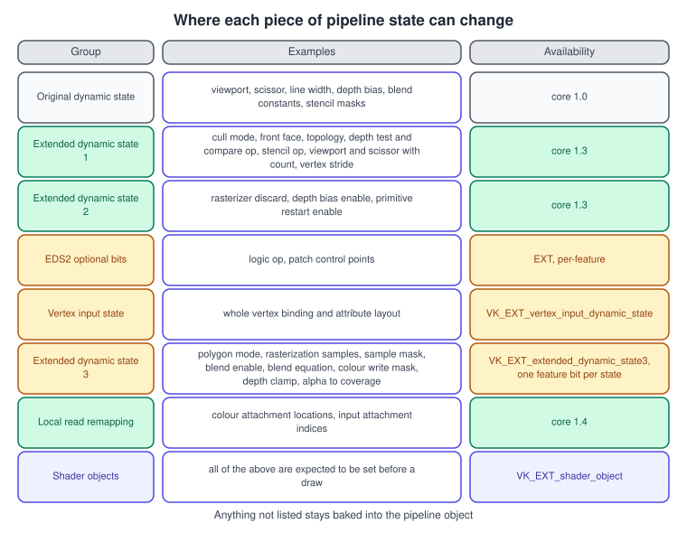
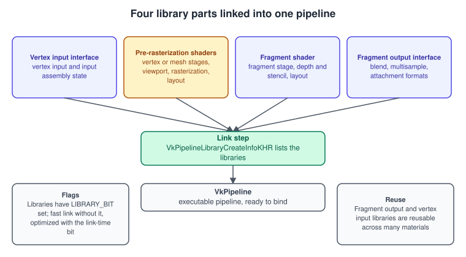
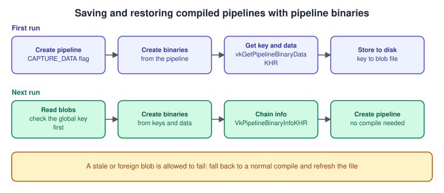
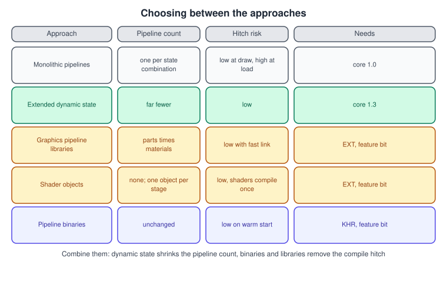

Dynamic State, Shader Objects and Pipeline Libraries in Vulkan
|
This content was generated with the assistance of AI and should be verified against the official documentation before being relied on in production. |
A Vulkan graphics pipeline bakes almost all rendering state into one immutable object: shaders, vertex layout, topology, rasterization, depth and stencil, blending, multisampling and the attachment formats. That design lets the driver compile everything ahead of the first draw, but it also means that every combination of state you need is a separate pipeline, and creating one can take milliseconds or, for a large shader, much longer. A scene with a few material types, two blend modes, three cull modes and a handful of formats quickly needs hundreds of pipelines, and a pipeline that is created in the middle of a frame is a visible hitch. Vulkan answers with four complementary tools, which this page explains in the order Khronos introduced them: dynamic state (change a piece of state with a command instead of a pipeline), shader objects (drop pipelines altogether), graphics pipeline libraries (compile the parts separately and link them quickly) and pipeline binaries (keep the compiled result yourself).
The facts were checked in November 2026. The documented version is Vulkan 1.4 with headers 1.4.3xx and the LunarG SDK 1.4.363.0. The Vulkan Bookshelf running example needs Vulkan 1.3, which already contains extended dynamic state 1 and 2, and treats everything else here as optional: each extension is queried and used only when the physical device reports its feature. Support differs a lot between GPUs, drivers and operating systems, so no code on this page assumes it; the feature query and fallbacks are shown with each tool. How features are discovered and enabled is explained in Versions, Profiles and Extensions and Physical and Logical Devices. The code is C++20 with Vulkan-Hpp (see Vulkan-Hpp, RAII and the C++ Bindings) and, where an extension is easier to show through the C API, plain C structures.
This page continues The Graphics Pipeline, which describes the pipeline object, the pipeline layout and the pipeline cache, and Dynamic Rendering, which removes the render pass from the pipeline. Draw calls themselves are in Vertex Input and Drawing. For the other APIs, Metal solves the same problem with argument tables and pipeline binary archives, see Shader Compilation and Pipeline Caching in Metal, and OpenGL changes state with ordinary calls, see Porting from OpenGL to Vulkan, Metal and WebGPU.
The permutation problem

Take the Bookshelf. The books use a lit, textured pipeline with back-face culling; the shelf uses the same pipeline with a different texture; the dust particles are drawn with additive blending and no depth write;
the debug view draws outlines with LINE polygon mode and no culling; and every one of them may run into a single-sample or a 4x multisampled target. With monolithic pipelines the count is the product of all those
choices. Any state that you move out of the pipeline and into a command divides that product. Dynamic state is the oldest and most widely supported answer; the others attack the compile cost instead.
Dynamic state
A pipeline lists the states that it leaves open in VkPipelineDynamicStateCreateInfo::pDynamicStates. The matching state in the other create-info structures is then ignored (the viewport and scissor counts excepted, see
below), and you must set the value with a command in the command buffer before the first draw that needs it. A draw with a required dynamic state unset is invalid; the validation layer reports it. The state set
by a command stays until another command or pipeline changes it, but do not depend on values set while a different pipeline was bound: setting everything the current pipeline declares after each bind
is the simplest rule that is always right, and the cost of the extra commands is small.
The original dynamic state (Vulkan 1.0)
VK_DYNAMIC_STATE_VIEWPORT, SCISSOR, LINE_WIDTH, DEPTH_BIAS, BLEND_CONSTANTS, DEPTH_BOUNDS, STENCIL_COMPARE_MASK, STENCIL_WRITE_MASK and STENCIL_REFERENCE were the only dynamic states in
1.0. Viewport and scissor are almost always dynamic, because they change with the window size; with a static viewport a resize needs a new pipeline. The commands are vkCmdSetViewport, vkCmdSetScissor,
vkCmdSetLineWidth, vkCmdSetDepthBias, vkCmdSetBlendConstants, vkCmdSetDepthBounds and the three vkCmdSetStencil* commands.
Extended dynamic state 1 and 2 (core in Vulkan 1.3)
VK_EXT_extended_dynamic_state and VK_EXT_extended_dynamic_state2 were promoted to core in Vulkan 1.3 together with dynamic rendering and synchronization2. After the promotion the commands drop the EXT
suffix.
| Group | Commands (core names) | Replaces the static state |
|---|---|---|
Extended dynamic state 1 |
|
|
|
Viewport and scissor counts (use |
|
|
Adds optional sizes and strides to the bind (the stride of the vertex binding can then be dynamic) |
|
|
Depth test state |
|
|
Stencil enable and operations |
|
Extended dynamic state 2 |
|
Rasterizer discard, depth bias enable, primitive restart |
Two more states belong to the extension but are not core: vkCmdSetLogicOpEXT and vkCmdSetPatchControlPointsEXT (features extendedDynamicState2LogicOp and
extendedDynamicState2PatchControlPoints). The core commands of the table are available whenever the device reports Vulkan 1.3, and a pipeline simply lists the corresponding VK_DYNAMIC_STATE_* values in its dynamic state
create info.
Extended dynamic state 3 and the single-purpose extensions
VK_EXT_extended_dynamic_state3 adds dynamic versions of the remaining blend, rasterization, multisample and tessellation state. It is not core; its feature structure
VkPhysicalDeviceExtendedDynamicState3FeaturesEXT has one flag per state, because implementations may support only some of them. Examples of the flag names are
extendedDynamicState3PolygonMode, extendedDynamicState3RasterizationSamples, extendedDynamicState3ColorBlendEnable, extendedDynamicState3ColorBlendEquation and
extendedDynamicState3ColorWriteMask. The matching commands are vkCmdSetPolygonModeEXT, vkCmdSetRasterizationSamplesEXT, vkCmdSetSampleMaskEXT, vkCmdSetAlphaToCoverageEnableEXT,
vkCmdSetAlphaToOneEnableEXT, vkCmdSetLogicOpEnableEXT, vkCmdSetColorBlendEnableEXT, vkCmdSetColorBlendEquationEXT, vkCmdSetColorWriteMaskEXT, vkCmdSetDepthClampEnableEXT,
vkCmdSetDepthClipEnableEXT, vkCmdSetTessellationDomainOriginEXT, vkCmdSetProvokingVertexModeEXT and vkCmdSetLineRasterizationModeEXT, together with the less common ones for conservative
rasterization, line stipple and the NVIDIA-specific states. A pipeline that uses it lists the states in pDynamicStates like any other.
Two older single-purpose extensions complete the set: VK_EXT_vertex_input_dynamic_state makes the whole vertex binding and attribute description dynamic through vkCmdSetVertexInputEXT, which lets one
pipeline draw meshes with different vertex layouts; and VK_EXT_color_write_enable adds vkCmdSetColorWriteEnableEXT, an on/off switch per colour attachment. The Vulkan Guide lists these together with
VK_EXT_attachment_feedback_loop_dynamic_state on its dynamic state page and maps every state to its extension in the dynamic state map.
Dynamic rendering local read
vkCmdSetRenderingAttachmentLocations and vkCmdSetRenderingInputAttachmentIndices (core in 1.4) are also dynamic state: they remap colour output locations and input attachment indices, as described in
Dynamic Rendering.
Code: one Bookshelf pipeline for several materials
The following code creates a single pipeline that leaves the cull mode, front face, depth test, depth compare, depth write, and polygon mode open, then draws the book, the shelf outline and the dust with the same pipeline object, checking the EDS3 feature first.
#include <vulkan/vulkan_raii.hpp>
#include <vector>
struct DynamicStateSupport {
bool eds3PolygonMode = false;
bool eds3BlendEnable = false;
bool eds3BlendEquation = false;
};
// Query the per-state EDS3 flags; only enable the extension if the device lists it.
DynamicStateSupport queryEds3(vk::raii::PhysicalDevice const& physical)
{
DynamicStateSupport support;
auto exts = physical.enumerateDeviceExtensionProperties();
bool listed = false;
for (auto const& e : exts)
if (std::string_view(e.extensionName) == VK_EXT_EXTENDED_DYNAMIC_STATE_3_EXTENSION_NAME) listed = true;
if (!listed) return support;
auto chain = physical.getFeatures2<vk::PhysicalDeviceFeatures2,
vk::PhysicalDeviceExtendedDynamicState3FeaturesEXT>();
auto const& f = chain.get<vk::PhysicalDeviceExtendedDynamicState3FeaturesEXT>();
support.eds3PolygonMode = f.extendedDynamicState3PolygonMode;
support.eds3BlendEnable = f.extendedDynamicState3ColorBlendEnable;
support.eds3BlendEquation = f.extendedDynamicState3ColorBlendEquation;
return support;
}
// The list of states the Bookshelf pipeline leaves open.
std::vector<vk::DynamicState> bookshelfDynamicStates(DynamicStateSupport const& s)
{
std::vector<vk::DynamicState> states = {
vk::DynamicState::eViewport, // core 1.0
vk::DynamicState::eScissor,
vk::DynamicState::eCullMode, // core 1.3 (extended dynamic state 1)
vk::DynamicState::eFrontFace,
vk::DynamicState::eDepthTestEnable,
vk::DynamicState::eDepthWriteEnable,
vk::DynamicState::eDepthCompareOp,
};
if (s.eds3PolygonMode) states.push_back(vk::DynamicState::ePolygonModeEXT);
if (s.eds3BlendEnable) states.push_back(vk::DynamicState::eColorBlendEnableEXT);
if (s.eds3BlendEquation) states.push_back(vk::DynamicState::eColorBlendEquationEXT);
return states;
}
enum class Material { Book, ShelfOutline, Dust };
// Called after vkCmdBindPipeline; sets every state the pipeline declared, so nothing is left to chance.
void applyMaterial(vk::raii::CommandBuffer& cmd, Material m, DynamicStateSupport const& s)
{
cmd.setCullMode(m == Material::ShelfOutline ? vk::CullModeFlagBits::eNone : vk::CullModeFlagBits::eBack);
cmd.setFrontFace(vk::FrontFace::eCounterClockwise);
cmd.setDepthTestEnable(VK_TRUE);
cmd.setDepthWriteEnable(m == Material::Dust ? VK_FALSE : VK_TRUE);
cmd.setDepthCompareOp(vk::CompareOp::eLess);
if (s.eds3PolygonMode)
cmd.setPolygonModeEXT(m == Material::ShelfOutline ? vk::PolygonMode::eLine : vk::PolygonMode::eFill);
if (s.eds3BlendEnable)
cmd.setColorBlendEnableEXT(0, vk::Bool32(m == Material::Dust));
if (s.eds3BlendEquation) {
vk::ColorBlendEquationEXT additive{};
additive.setSrcColorBlendFactor(vk::BlendFactor::eSrcAlpha)
.setDstColorBlendFactor(vk::BlendFactor::eOne)
.setColorBlendOp(vk::BlendOp::eAdd)
.setSrcAlphaBlendFactor(vk::BlendFactor::eOne)
.setDstAlphaBlendFactor(vk::BlendFactor::eOne)
.setAlphaBlendOp(vk::BlendOp::eAdd);
cmd.setColorBlendEquationEXT(0, additive);
}
}Source: Vulkan Guide: Dynamic State
When the EDS3 flags are false, the code above falls back to separate pipelines for the outline and the dust, created with the static versions of those states; the usual structure is a small pipeline key (blend mode, polygon mode, formats, samples) that the renderer maps to a pipeline in a cache, with fewer key fields the more dynamic state the device supports.
Performance and pitfalls
-
Dynamic state is not free on every GPU: some implementations rebuild internal state when a command changes, so it is cheapest to set state when it changes, not for every draw.
-
Dynamic state is recorded into the command buffer, so set it in the command buffer that draws, including in secondary command buffers.
-
Changing the primitive topology dynamically is limited to the same topology class (for example, list to list); do not rely on switching between points, lines and triangles with a single pipeline.
-
VK_DYNAMIC_STATE_VIEWPORTandVK_DYNAMIC_STATE_VIEWPORT_WITH_COUNTcannot both be listed in one pipeline, and the same holds for the scissor pair.
Shader objects: VK_EXT_shader_object
Shader objects remove the pipeline altogether. Instead of baking shader stages and state into one VkPipeline, you create a VkShaderEXT per stage (or one call for several stages) and bind them with
vkCmdBindShadersEXT; every other piece of graphics state is dynamic and is set with commands. Its Khronos proposal describes it as a way to use shaders without creating pipelines, so that applications with highly dynamic content
avoid the pipeline compile step, while pipelines remain the better choice when the whole state is known ahead of time.
-
Creation.
vkCreateShadersEXT(device, createInfoCount, pCreateInfos, pAllocator, pShaders)compiles one or more shader stages.VkShaderCreateInfoEXThasflags,stage,nextStage(the stages that may follow this one),codeType(VK_SHADER_CODE_TYPE_SPIRV_EXTorVK_SHADER_CODE_TYPE_BINARY_EXT),codeSizeandpCode,pName, descriptor set layouts and push constant ranges given directly (no pipeline layout object), and specialization info. All create infos in one call use the samecodeType. -
Linking. Setting
VK_SHADER_CREATE_LINK_STAGE_BIT_EXTon every info of a call lets the implementation optimize across the stages. The flag must be set on all or none of the infos; linked shaders must always be bound together at draw time, and the implementation does not validate this. -
Binding.
vkCmdBindShadersEXT(commandBuffer, stageCount, pStages, pShaders)binds per stage; a null handle unbinds a stage. A draw needs the vertex and fragment stages bound, and stages that are not used, such as tessellation and geometry, must be explicitly unbound. -
State. Nearly all graphics state must be set dynamically before each draw (viewport and scissor with count, culling, front face, topology, depth and stencil, vertex input, blending, rasterization samples, color write mask, and so on). The proposal lists the full set.
-
Binaries.
vkGetShaderBinaryDataEXTreturns an implementation-specific binary thatvkCreateShadersEXTcan load withVK_SHADER_CODE_TYPE_BINARY_EXT. A binary from a different driver version or device is rejected withVK_INCOMPATIBLE_SHADER_BINARY_EXT, so you must keep the SPIR-V as a fallback and compare theshaderBinaryUUIDandshaderBinaryVersionreported inVkPhysicalDeviceShaderObjectPropertiesEXT. -
Feature.
VkPhysicalDeviceShaderObjectFeaturesEXT::shaderObject.
The Bookshelf shader is written in Slang (see Shaders, SPIR-V and Shading Languages) and compiled to SPIR-V; the code below creates one linked
vertex-and-fragment pair from the SPIR-V words and binds them. It uses the C API through vkGetDeviceProcAddr, which is how extension functions are reached without a loader library.
#include <vulkan/vulkan.h>
#include <vector>
#include <stdexcept>
struct ShaderObjectApi {
PFN_vkCreateShadersEXT create = nullptr;
PFN_vkDestroyShaderEXT destroy = nullptr;
PFN_vkCmdBindShadersEXT bind = nullptr;
};
ShaderObjectApi loadShaderObjectApi(VkDevice device)
{
ShaderObjectApi api;
api.create = reinterpret_cast<PFN_vkCreateShadersEXT>(vkGetDeviceProcAddr(device, "vkCreateShadersEXT"));
api.destroy = reinterpret_cast<PFN_vkDestroyShaderEXT>(vkGetDeviceProcAddr(device, "vkDestroyShaderEXT"));
api.bind = reinterpret_cast<PFN_vkCmdBindShadersEXT>(vkGetDeviceProcAddr(device, "vkCmdBindShadersEXT"));
if (!api.create || !api.destroy || !api.bind)
throw std::runtime_error("VK_EXT_shader_object was not enabled on the device");
return api;
}
struct BookShaders {
VkShaderEXT vertex = VK_NULL_HANDLE;
VkShaderEXT fragment = VK_NULL_HANDLE;
};
BookShaders createBookShaders(VkDevice device, ShaderObjectApi const& api,
std::vector<uint32_t> const& vertexSpirv,
std::vector<uint32_t> const& fragmentSpirv,
VkDescriptorSetLayout setLayout,
VkPushConstantRange pushRange)
{
VkShaderCreateInfoEXT infos[2]{};
infos[0].sType = VK_STRUCTURE_TYPE_SHADER_CREATE_INFO_EXT;
infos[0].flags = VK_SHADER_CREATE_LINK_STAGE_BIT_EXT; // all or none
infos[0].stage = VK_SHADER_STAGE_VERTEX_BIT;
infos[0].nextStage = VK_SHADER_STAGE_FRAGMENT_BIT;
infos[0].codeType = VK_SHADER_CODE_TYPE_SPIRV_EXT;
infos[0].codeSize = vertexSpirv.size() * sizeof(uint32_t);
infos[0].pCode = vertexSpirv.data();
infos[0].pName = "main";
infos[0].setLayoutCount = 1;
infos[0].pSetLayouts = &setLayout;
infos[0].pushConstantRangeCount = 1;
infos[0].pPushConstantRanges = &pushRange;
infos[1] = infos[0]; // same layout information
infos[1].stage = VK_SHADER_STAGE_FRAGMENT_BIT;
infos[1].nextStage = 0;
infos[1].codeSize = fragmentSpirv.size() * sizeof(uint32_t);
infos[1].pCode = fragmentSpirv.data();
VkShaderEXT shaders[2]{};
if (api.create(device, 2, infos, nullptr, shaders) != VK_SUCCESS)
throw std::runtime_error("vkCreateShadersEXT failed");
return {shaders[0], shaders[1]};
}
// Binds the pair and unbinds every graphics stage the draw does not use.
void bindBookShaders(VkCommandBuffer cmd, ShaderObjectApi const& api, BookShaders const& s)
{
VkShaderStageFlagBits stages[] = {
VK_SHADER_STAGE_VERTEX_BIT,
VK_SHADER_STAGE_TESSELLATION_CONTROL_BIT,
VK_SHADER_STAGE_TESSELLATION_EVALUATION_BIT,
VK_SHADER_STAGE_GEOMETRY_BIT,
VK_SHADER_STAGE_FRAGMENT_BIT,
};
VkShaderEXT handles[] = { s.vertex, VK_NULL_HANDLE, VK_NULL_HANDLE, VK_NULL_HANDLE, s.fragment };
api.bind(cmd, 5, stages, handles);
// After this, every state in the shader object list must still be set with vkCmdSet* commands.
}Shader objects are not a drop-in replacement. Pipelines can be validated and optimized with the full state known; shader objects require you to set all state, and the driver cannot optimize across stages you did not link. They are not part of the Vulkan core, so a portable renderer needs the pipeline path anyway. They suit tools, prototypes, editors and engines with highly dynamic content, and cases where simple state handling matters more than the last bit of GPU performance. Shader objects also require you to supply the state that a pipeline would have carried, including the attachment formats, so they are used together with dynamic rendering (see Dynamic Rendering); the remapping commands for local read are, with shader objects, the only way to set that remapping.
Graphics pipeline libraries: VK_EXT_graphics_pipeline_library
A pipeline library lets you compile parts of a graphics pipeline separately and link them into a complete pipeline later. The linking is cheap compared with a full compile, so a game can build the pieces
during loading and assemble the pipelines on demand without a hitch. The extension builds on VK_KHR_pipeline_library and its feature structure is VkPhysicalDeviceGraphicsPipelineLibraryFeaturesEXT with
the flag graphicsPipelineLibrary.

Part (VkGraphicsPipelineLibraryFlagBitsEXT) |
What it contains |
|---|---|
|
Vertex input state and input assembly state |
|
Vertex (or task and mesh), tessellation and geometry stages, the pipeline layout, viewport and rasterization state, and the rendering formats data that applies |
|
The fragment shader, the layout, and the depth and stencil state |
|
Colour blend state, multisample state and the attachment formats of dynamic rendering |
Each library is created like a graphics pipeline with VkGraphicsPipelineLibraryCreateInfoEXT in the pNext chain, which names the parts it contains, and with VK_PIPELINE_CREATE_LIBRARY_BIT_KHR set. A
complete pipeline is created by a VkGraphicsPipelineCreateInfo that carries VkPipelineLibraryCreateInfoKHR (a count and an array of libraries) and no stages of its own. The rules are strict: parts must
not overlap between the pipeline and its libraries, state shared by several parts must match exactly, a complete set produces an executable pipeline that cannot be linked further, and a partial set stays a library.
Fast link versus link-time optimization
Linking without extra flags is a fast link: the driver mostly stitches pre-compiled code together, which is cheap enough that implementations may even support it while recording commands
(graphicsPipelineLibraryFastLinking in VkPhysicalDeviceGraphicsPipelineLibraryPropertiesEXT), at the price of a possible performance loss, because the stages were not optimized together.
For the best result, create the libraries with VK_PIPELINE_CREATE_RETAIN_LINK_TIME_OPTIMIZATION_INFO_BIT_EXT so the implementation keeps what it needs, then link with
VK_PIPELINE_CREATE_LINK_TIME_OPTIMIZATION_BIT_EXT. The result is expected to perform like a monolithic pipeline. The usual pattern is two links: a fast link immediately, so the draw can happen this frame, and
an optimized link on a worker thread whose result replaces the fast-linked pipeline when it is ready.
Further details that matter in practice:
-
graphicsPipelineLibraryIndependentInterpolationDecorationreports whether the last pre-rasterization stage and the fragment shader may use different interpolation decorations; if false, they must match. -
Pipeline layouts created with
VK_PIPELINE_LAYOUT_CREATE_INDEPENDENT_SETS_BIT_EXTlet each library name only the descriptor sets it uses; unused set layouts areVK_NULL_HANDLE. The final layout is the union. Without the flag, pre-rasterization and fragment libraries each need the full layout. -
If
rasterizerDiscardEnableis set, the fragment shader and fragment output libraries are not part of the complete set. -
The libraries can be linked recursively, and the vertex input and fragment output libraries are small and shared by many pipelines.
Code: the Bookshelf materials as libraries
The vertex input interface and the fragment output interface are the same for every book, so they are created once. Each material contributes a pre-rasterization library (vertex shader plus rasterization state) and a fragment library (fragment shader plus depth state); a pipeline is the link of one of each with the two shared ones.
#include <vulkan/vulkan.hpp>
#include <array>
struct Libraries {
vk::Pipeline vertexInput;
vk::Pipeline fragmentOutput;
};
// Shared parts: created once at start-up. Dynamic rendering formats go into the fragment output part.
Libraries createSharedLibraries(vk::Device device, vk::Format colorFormat, vk::Format depthFormat,
vk::SampleCountFlagBits samples)
{
// --- vertex input interface ---
vk::VertexInputBindingDescription binding{0, 8 * sizeof(float), vk::VertexInputRate::eVertex};
std::array<vk::VertexInputAttributeDescription, 3> attributes{{
{0, 0, vk::Format::eR32G32B32Sfloat, 0},
{1, 0, vk::Format::eR32G32B32Sfloat, 3 * sizeof(float)},
{2, 0, vk::Format::eR32G32Sfloat, 6 * sizeof(float)},
}};
vk::PipelineVertexInputStateCreateInfo vertexInput{{}, binding, attributes};
vk::PipelineInputAssemblyStateCreateInfo inputAssembly{{}, vk::PrimitiveTopology::eTriangleList};
vk::StructureChain<vk::GraphicsPipelineCreateInfo, vk::GraphicsPipelineLibraryCreateInfoEXT> viChain{};
viChain.get<vk::GraphicsPipelineLibraryCreateInfoEXT>()
.setFlags(vk::GraphicsPipelineLibraryFlagBitsEXT::eVertexInputInterface);
auto& vi = viChain.get<vk::GraphicsPipelineCreateInfo>();
vi.setFlags(vk::PipelineCreateFlagBits::eLibraryKHR |
vk::PipelineCreateFlagBits::eRetainLinkTimeOptimizationInfoEXT)
.setPVertexInputState(&vertexInput)
.setPInputAssemblyState(&inputAssembly);
// --- fragment output interface ---
vk::PipelineColorBlendAttachmentState blendAttachment{};
blendAttachment.setColorWriteMask(vk::ColorComponentFlagBits::eR | vk::ColorComponentFlagBits::eG |
vk::ColorComponentFlagBits::eB | vk::ColorComponentFlagBits::eA);
vk::PipelineColorBlendStateCreateInfo blend{};
blend.setAttachments(blendAttachment);
vk::PipelineMultisampleStateCreateInfo multisample{{}, samples};
vk::StructureChain<vk::GraphicsPipelineCreateInfo,
vk::GraphicsPipelineLibraryCreateInfoEXT,
vk::PipelineRenderingCreateInfo> foChain{};
foChain.get<vk::GraphicsPipelineLibraryCreateInfoEXT>()
.setFlags(vk::GraphicsPipelineLibraryFlagBitsEXT::eFragmentOutputInterface);
foChain.get<vk::PipelineRenderingCreateInfo>()
.setColorAttachmentFormats(colorFormat)
.setDepthAttachmentFormat(depthFormat);
auto& fo = foChain.get<vk::GraphicsPipelineCreateInfo>();
fo.setFlags(vk::PipelineCreateFlagBits::eLibraryKHR |
vk::PipelineCreateFlagBits::eRetainLinkTimeOptimizationInfoEXT)
.setPColorBlendState(&blend)
.setPMultisampleState(&multisample);
Libraries libs;
libs.vertexInput = device.createGraphicsPipeline(nullptr, viChain.get<vk::GraphicsPipelineCreateInfo>()).value;
libs.fragmentOutput = device.createGraphicsPipeline(nullptr, foChain.get<vk::GraphicsPipelineCreateInfo>()).value;
return libs;
}
// Per material: the two shader parts. The layout must have been created with INDEPENDENT_SETS or be the full layout.
struct MaterialLibraries { vk::Pipeline preRasterization; vk::Pipeline fragment; };
MaterialLibraries createMaterialLibraries(vk::Device device, vk::PipelineLayout layout,
vk::ShaderModule vertexModule, vk::ShaderModule fragmentModule,
vk::Format colorFormat, vk::Format depthFormat,
vk::SampleCountFlagBits samples)
{
// --- pre-rasterization shaders ---
vk::PipelineShaderStageCreateInfo vs{{}, vk::ShaderStageFlagBits::eVertex, vertexModule, "main"};
vk::PipelineViewportStateCreateInfo viewport{{}, 1, nullptr, 1, nullptr}; // dynamic viewport/scissor
vk::PipelineRasterizationStateCreateInfo raster{};
raster.setPolygonMode(vk::PolygonMode::eFill).setCullMode(vk::CullModeFlagBits::eBack)
.setFrontFace(vk::FrontFace::eCounterClockwise).setLineWidth(1.0f);
std::array<vk::DynamicState, 2> dyn{vk::DynamicState::eViewport, vk::DynamicState::eScissor};
vk::PipelineDynamicStateCreateInfo dynamicState{{}, dyn};
vk::StructureChain<vk::GraphicsPipelineCreateInfo,
vk::GraphicsPipelineLibraryCreateInfoEXT,
vk::PipelineRenderingCreateInfo> preChain{};
preChain.get<vk::GraphicsPipelineLibraryCreateInfoEXT>()
.setFlags(vk::GraphicsPipelineLibraryFlagBitsEXT::ePreRasterizationShaders);
preChain.get<vk::PipelineRenderingCreateInfo>()
.setColorAttachmentFormats(colorFormat).setDepthAttachmentFormat(depthFormat);
auto& pre = preChain.get<vk::GraphicsPipelineCreateInfo>();
pre.setFlags(vk::PipelineCreateFlagBits::eLibraryKHR |
vk::PipelineCreateFlagBits::eRetainLinkTimeOptimizationInfoEXT)
.setStages(vs).setLayout(layout).setPViewportState(&viewport)
.setPRasterizationState(&raster).setPDynamicState(&dynamicState);
// --- fragment shader ---
vk::PipelineShaderStageCreateInfo fs{{}, vk::ShaderStageFlagBits::eFragment, fragmentModule, "main"};
vk::PipelineDepthStencilStateCreateInfo depthStencil{};
depthStencil.setDepthTestEnable(VK_TRUE).setDepthWriteEnable(VK_TRUE).setDepthCompareOp(vk::CompareOp::eLess);
vk::PipelineMultisampleStateCreateInfo multisample{{}, samples};
vk::StructureChain<vk::GraphicsPipelineCreateInfo,
vk::GraphicsPipelineLibraryCreateInfoEXT,
vk::PipelineRenderingCreateInfo> fragChain{};
fragChain.get<vk::GraphicsPipelineLibraryCreateInfoEXT>()
.setFlags(vk::GraphicsPipelineLibraryFlagBitsEXT::eFragmentShader);
fragChain.get<vk::PipelineRenderingCreateInfo>()
.setColorAttachmentFormats(colorFormat).setDepthAttachmentFormat(depthFormat);
auto& frag = fragChain.get<vk::GraphicsPipelineCreateInfo>();
frag.setFlags(vk::PipelineCreateFlagBits::eLibraryKHR |
vk::PipelineCreateFlagBits::eRetainLinkTimeOptimizationInfoEXT)
.setStages(fs).setLayout(layout).setPDepthStencilState(&depthStencil).setPMultisampleState(&multisample);
return {
device.createGraphicsPipeline(nullptr, preChain.get<vk::GraphicsPipelineCreateInfo>()).value,
device.createGraphicsPipeline(nullptr, fragChain.get<vk::GraphicsPipelineCreateInfo>()).value,
};
}
// Links the four libraries. Pass optimize = true on a worker thread for the link-time optimized pipeline.
vk::Pipeline linkPipeline(vk::Device device, vk::PipelineLayout layout, Libraries const& shared,
MaterialLibraries const& material, bool optimize)
{
std::array<vk::Pipeline, 4> parts{
shared.vertexInput, material.preRasterization, material.fragment, shared.fragmentOutput};
vk::PipelineLibraryCreateInfoKHR linkInfo{};
linkInfo.setLibraries(parts);
vk::GraphicsPipelineCreateInfo ci{};
ci.setLayout(layout).setPNext(&linkInfo);
if (optimize) ci.setFlags(vk::PipelineCreateFlagBits::eLinkTimeOptimizationEXT);
return device.createGraphicsPipeline(nullptr, ci).value;
}The code checks no flags to stay short; a real renderer tests graphicsPipelineLibrary and falls back to monolithic pipelines when it is absent. Note that the fast-linked pipeline must not be destroyed
while a command buffer that uses it is pending, so swapping in the optimized pipeline is done between frames, with the usual deferred-destruction queue (see
Timeline Semaphores and Frames in Flight).
Pipeline binaries: VK_KHR_pipeline_binary
The pipeline cache (VkPipelineCache) lets the driver store compiled code, but it decides what to keep and gives you one opaque blob. VK_KHR_pipeline_binary hands the compiled result to the application
as separate VkPipelineBinaryKHR objects with a key, so the application owns the cache: it decides which pipelines to store, where, how long, and how to deduplicate. The Vulkan Guide’s pipeline cache page
covers the older mechanism, and the pipeline overview page of this site shows how to persist it; here the new path is described.

The pieces:
-
VkPhysicalDevicePipelineBinaryFeaturesKHR::pipelineBinariesis the feature.VkPhysicalDevicePipelineBinaryPropertiesKHRcarries hints, such as whether the driver can create binaries from the create info alone (pipelineBinaryInternalCache). -
VK_PIPELINE_CREATE_2_CAPTURE_DATA_BIT_KHRmust be set (throughVkPipelineCreateFlags2CreateInfo, core in 1.4 with maintenance5) on a pipeline whose binaries you want to read later. -
vkCreatePipelineBinariesKHRcreatesVkPipelineBinaryKHRhandles from exactly one source per call: an existing pipeline, stored key and data pairs (VkPipelineBinaryKeysAndDataKHR) or the driver’s internal cache. -
vkGetPipelineBinaryDataKHRreturns a binary’s key and its data; the key lets you deduplicate identical binaries across pipelines. -
vkGetPipelineKeyKHRcomputes the key of a pipeline create info before creating it; passing null returns a global key, which says whether data saved by an earlier run is still valid for this driver. -
At creation, you attach
VkPipelineBinaryInfoKHRlisting the binaries to the pipeline’spNext; the create info must otherwise match the original pipeline, although the shader modules are ignored. -
vkReleaseCapturedPipelineDataKHRfrees the data the driver kept for capture, andvkDestroyPipelineBinaryKHRdestroys a handle.VkDevicePipelineBinaryInternalCacheControlKHRin the device create info disables the driver’s internal cache, after which binaries must come from your own data.
#include <vulkan/vulkan.h>
#include <vector>
#include <fstream>
#include <cstdint>
struct StoredBinary {
VkPipelineBinaryKeyKHR key;
std::vector<uint8_t> data;
};
// First run: the pipeline was created with VK_PIPELINE_CREATE_2_CAPTURE_DATA_BIT_KHR.
std::vector<StoredBinary> captureBinaries(VkDevice device, VkPipeline pipeline)
{
VkPipelineBinaryCreateInfoKHR createInfo{VK_STRUCTURE_TYPE_PIPELINE_BINARY_CREATE_INFO_KHR};
createInfo.pipeline = pipeline; // source: an existing pipeline
VkPipelineBinaryHandlesInfoKHR handles{VK_STRUCTURE_TYPE_PIPELINE_BINARY_HANDLES_INFO_KHR};
vkCreatePipelineBinariesKHR(device, &createInfo, nullptr, &handles); // query the count
std::vector<VkPipelineBinaryKHR> binaries(handles.pipelineBinaryCount);
handles.pPipelineBinaries = binaries.data();
vkCreatePipelineBinariesKHR(device, &createInfo, nullptr, &handles); // create them
std::vector<StoredBinary> out;
for (VkPipelineBinaryKHR b : binaries) {
VkPipelineBinaryDataInfoKHR dataInfo{VK_STRUCTURE_TYPE_PIPELINE_BINARY_DATA_INFO_KHR};
dataInfo.pipelineBinary = b;
StoredBinary item{};
item.key.sType = VK_STRUCTURE_TYPE_PIPELINE_BINARY_KEY_KHR;
size_t size = 0;
vkGetPipelineBinaryDataKHR(device, &dataInfo, &item.key, &size, nullptr); // size
item.data.resize(size);
vkGetPipelineBinaryDataKHR(device, &dataInfo, &item.key, &size, item.data.data());
out.push_back(std::move(item));
}
for (VkPipelineBinaryKHR b : binaries) vkDestroyPipelineBinaryKHR(device, b, nullptr);
return out;
}
// Next run: rebuild the binaries from the files and chain them into the pipeline create info.
VkPipeline createFromStored(VkDevice device, VkGraphicsPipelineCreateInfo createInfo,
std::vector<StoredBinary>& stored)
{
std::vector<VkPipelineBinaryKeyKHR> keys;
std::vector<VkPipelineBinaryDataKHR> blobs;
for (auto& s : stored) {
keys.push_back(s.key);
blobs.push_back({s.data.size(), s.data.data()});
}
VkPipelineBinaryKeysAndDataKHR keysAndData{};
keysAndData.binaryCount = uint32_t(stored.size());
keysAndData.pPipelineBinaryKeys = keys.data();
keysAndData.pPipelineBinaryData = blobs.data();
VkPipelineBinaryCreateInfoKHR binInfo{VK_STRUCTURE_TYPE_PIPELINE_BINARY_CREATE_INFO_KHR};
binInfo.pKeysAndDataInfo = &keysAndData;
std::vector<VkPipelineBinaryKHR> binaries(stored.size());
VkPipelineBinaryHandlesInfoKHR handles{VK_STRUCTURE_TYPE_PIPELINE_BINARY_HANDLES_INFO_KHR};
handles.pipelineBinaryCount = uint32_t(binaries.size());
handles.pPipelineBinaries = binaries.data();
if (vkCreatePipelineBinariesKHR(device, &binInfo, nullptr, &handles) != VK_SUCCESS)
return VK_NULL_HANDLE; // stale data: compile normally and refresh the file
VkPipelineBinaryInfoKHR use{VK_STRUCTURE_TYPE_PIPELINE_BINARY_INFO_KHR};
use.binaryCount = uint32_t(binaries.size());
use.pPipelineBinaries = binaries.data();
use.pNext = createInfo.pNext;
createInfo.pNext = &use;
VkPipeline pipeline = VK_NULL_HANDLE;
vkCreateGraphicsPipelines(device, VK_NULL_HANDLE, 1, &createInfo, nullptr, &pipeline);
for (VkPipelineBinaryKHR b : binaries) vkDestroyPipelineBinaryKHR(device, b, nullptr);
return pipeline;
}Everything in the stored files is specific to the driver and device that produced it. Before reading the files, compute the global key with vkGetPipelineKeyKHR and discard them if it differs from the key you saved;
treat any failure as a cache miss. Do not ship binary files with your game; they belong on the user’s machine, next to your own shader-cache directory.
Choosing between the techniques

-
Start with monolithic pipelines and the core 1.3 dynamic states. They work everywhere that reports Vulkan 1.3, and the Bookshelf needs few permutations.
-
Add EDS3 states on devices that report them, to cut the number of blend and rasterization pipelines. Keep the keyed cache for devices that do not.
-
Use pipeline libraries when a large, material-driven game has hundreds of shader combinations and a compile hitch is visible. They need a driver with fast linking to pay off; test with
graphicsPipelineLibraryFastLinking. -
Use shader objects for tools, editors and engines that value a simple model over peak performance, and keep a pipeline fallback.
-
Use pipeline binaries (or the older pipeline cache) to make the second launch fast, regardless of which technique built the pipeline.
Common mistakes
-
Forgetting to set a dynamic state. Each state listed in
pDynamicStatesmust be set before the draw. A missed state is the commonest validation error after enabling EDS. -
Mixing the viewport variants. A pipeline with
VIEWPORT_WITH_COUNTis paired withvkCmdSetViewportWithCount, notvkCmdSetViewport. -
Assuming EDS3 is complete. Each state has its own feature flag; check the one you use, not just the extension.
-
Linking libraries with mismatching shared state. The viewport state, layout and formats given to several parts must be identical.
-
Not retaining link-time optimization info. Without
RETAIN_LINK_TIME_OPTIMIZATION_INFOon every library, an optimized link is not allowed. -
Mixing linked shader objects. Shaders created with the link flag must be bound together; the driver does not validate it.
-
Trusting a saved pipeline binary. Check the global key and expect the creation to fail; fall back to compiling.
Where the books are out of date
| Source | Statement | Today |
|---|---|---|
Vulkan Cookbook (VCB), chapters 8 and 9 |
Only a small set of states is dynamic (viewport, scissor, line width, depth bias, blend constants, depth bounds and the stencil masks); every other change needs a new pipeline object. |
Extended dynamic state 1 and 2 are core since Vulkan 1.3 (cull mode, front face, topology, depth and stencil state, restart, discard, depth bias enable); EDS3 and vertex input dynamic state extend this further; shader objects remove pipelines entirely; pipeline libraries split compilation. |
Vulkan Programming Guide (VPG), chapters 6 and 7 |
Pipelines are created monolithically, with the pipeline cache as the only way to save compile time. |
Graphics pipeline libraries ( |